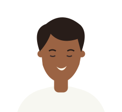
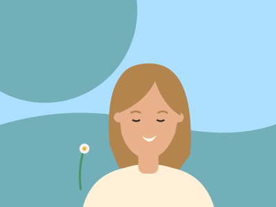
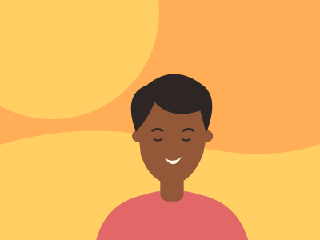
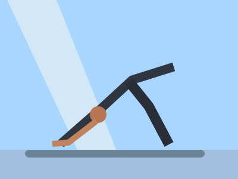
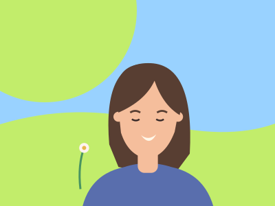
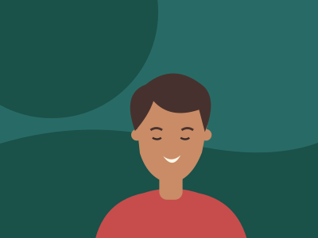

همراهی از قدم اول
با شناخت عادتها و اهداف شما شروع میکنیم. لازم نیست همه چیز یکباره عوض شود.

دیدن برنامههاتیمهای حرکت و تغذیه کنار هم کار میکنند تا برنامه با زندگی روزمرهٔ شما هماهنگ بماند.


با شناخت عادتها و اهداف شما شروع میکنیم. لازم نیست همه چیز یکباره عوض شود.
با ریتم خودتان
انتخابهای روزمره
برای برنامهٔ تازه
مرور مسیر


بررسی هدف و انتخاب یک نقطهٔ شروع واقعی.
تمرینهای کوتاه و قابل اجرا در فضای روزمره.
مرور پیشرفت و هماهنگی برای قدم بعدی.

در گفتوگوی نخست از زمان آزاد و هدف شما میپرسیم تا مسیر مناسب را انتخاب کنیم.
در فرم درخواست بنویسید که جلسهٔ حضوری یا آنلاین را ترجیح میدهید.
در بازبینی دورهای تجربهٔ شما را میشنویم و برنامه را متناسب با آن تنظیم میکنیم.
برای یک گفتوگوی اولیه، از برنامه و هدف خود بگویید.
 انتخاب این طرح
انتخاب این طرح